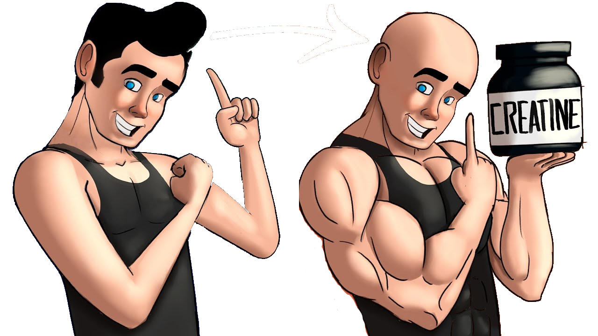

CREATINA este un aminoacid localizat mai ales în mușchii corpului, precum și în creier, utilizat de o gama mare de sportivi.
Majoritatea oamenilor obțin creatină prin consumul de fructe de mare și carne roșie, deși în cantități mult mai mici decât cele găsite în suplimentele de creatină preparate sintetic. Ficatul, pancreasul și rinichii corpului pot, de asemenea, produce aproximativ 1 gram de creatină pe zi.
Puteți suplimenta necesarul de creatină cu un produs ca cel de la adresa: https://geniusnutrition.ro/collections/creatina/products/creatine-monohydrate-400g
Tipurile de creatină cele mai cunoscute le gasiți in tabelul de mai jos:
| Tip | Beneficii | Efecte adverse |
|---|---|---|
| Monohidrat | Masă musculară îmbunătățită, creșterea randamentului puterii; | Luarea în greutate; |
| Alcalin | Creșterea cantitații de fosfocreatină din mușchi; | Afecteaza rinichii, în cazul unor boli cronice; |
| Clorhidrat | Nu genereaza retenție de apă în corp; | Nu prezintă; |
Completați dacă sunteți interesați de detalii suplimentare.
Sporturi in care se poate utiliza: